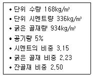
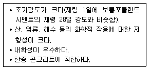
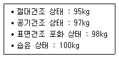
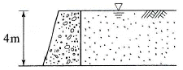
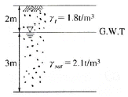
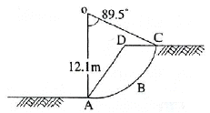
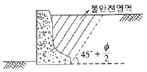
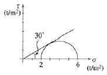

건설재료시험기사 (2006-03-05 기출문제)
1과목: 콘크리트공학
1. 포스트텐션 방식에서 실시하는 그라우트에 대해 설명한 것 중 옳은 것은?
- 팽창률은 10% 이상을 표준으로 한다.
- 블리딩률은 5% 이하를 표준으로 한다.
- 팽창성 그라우트의 재령 28일 압축 강도는 20MPa 이상을 표준으로 한다.
- 물-시멘트는 45%이상으로 한다.
(정답률: 알수없음)

2. 콘크리트의 건조 수축량에 관한 다음 설명 중 옳은 것은?
- 단위 굵은 골재량이 많을수록 건조 수축량은 크다.
- 분말도가 큰 시멘트일수록 건조 수축량은 크다.
- 습도가 낮을수록 온도가 높을수록 건조수축량은 작다.
- 물-시멘트비가 동일한 경우 단위 수량의 차이에 따라 건조 수축량이 달라지지는 않는다.
(정답률: 알수없음)
3. 콘크리트 재료에 염화물이 많이 함유되어 시공할 구조물이 염해를 받을 가능성이 있는 경우에 대한 조치로서 틀린 것은?
- 물-시멘트비를 작게 하여 사용한다.
- 충분한 철근 피복 두께를 두어 열화에 대비한다.
- 가능한 균열폭을 작게 만든다.
- 단위수량을 늘려 염분을 희석시킨다.
(정답률: 알수없음)
4. 콘크리트를 배합 설계할 때 물-시멘트를 정하는 기준이 아닌 것은?
- 내동행성
- 압축강도
- 단위 시멘트량
- 내구성
(정답률: 알수없음)
5. 일반 콘크리트의 타설 후 다지기에서 내부 진동기를 사용할 경우 진동다지기는 얼마 정도의 간격으로 찌르는가?
- 20cm 이하
- 50cm이하
- 100cm 이하
- 150cm이하
(정답률: 알수없음)
6. 댐 콘크리트 등 몇 가지를 제외하고는 일반적인 경우에 표준 양생한 재령 28일 공시체의 압축 강도를 콘크리트의 설계 기준 강도로 정하고 있다. 그 이유로서 가장 적당한 것은?
- 크리프와 건조수축이 장기적으로 발생하므로
- 양생 방법에 따라 다르나. 재령 28일에서 강도 발현이 최대가 되므로
- 실제 구조물에서 재령 28일 이후의 강도 증진을 크게 기대할 수가 없으므로
- 거푸집 및 동바리 제거의 시기가 타설후 28일이므로
(정답률: 알수없음)
7. 시방 배합에서 규정된 배합의 표시법에 포함되지 않는 것은?
- 물-시멘트비
- 슬럼프
- 잔골재의 최대 치수
- 잔골재율
(정답률: 알수없음)
8. 크리트 구조물의 온도 균열에 대한 시공상의 대책으로 틀린 것은?
- 단위 시멘트량을 적게 한다.
- 1회의 콘크리트 타설 높이를 줄인다.
- 수축 이음부를 설치하고, 콘크리트 내부 온도를 낮춘다.
- 기존의 콘크리트로 새로운 콘크리트의 온도에 따른 이동을 구속시킨다.
(정답률: 알수없음)
9. 콘크리트 반죽시에 충분한 혼합을 하게 되면 나타나는 현상을 열거한 것이다. 잘못된 것은?
- 시멘트 풀이 골재의 표면에 고르게 부착하게 한다.
- 공기량이 늘어난다.
- 워커빌리티가 향상된다.
- 재료 분리가 줄어든다.
(정답률: 알수없음)
10. 다음 주어진 자료에서 절대 용적 방법을 이용하여 구한 단위 잔골재량은 얼마인가?

- 531kg/m3
- 581kg/m3
- 766kg/m3
- 641kg/m3
(정답률: 알수없음)
11. 콘크리트의 성능 저하 원인의 하나인 알칼리 골재 반응에 관한 설명 중 틀린 것은?
- 알칼리 골재 반응은 알칼리-실리카 반응, 알칼리 - 탄산염 반응, 알칼리-실리케이트 반응으로 분류한다.
- 알칼리 골재반응을 억제하기 위하여 단위 시멘트량을 크게 하여야 한다.
- 알칼리 골재 반응은 고로 슬래그 미분말, 플라이 애시 등의 포졸란 재료에 의해 억제된다.
- 알칼리 골재 반응이 진행되면 무근 콘크리트에서는 거북이등과 같은 균열이 진행된다.
(정답률: 알수없음)
12. 매스(mass)콘크리트에 대한 다음 설명 중 잘못된 것은?
- 부재 또는 구조물의 치수가 커서 시멘트의 수화열로 인한 온도의 상승을 고려하여 시공해야 하는 콘크리트이다.
- 매스콘크리트로 다루어야 하는 구조물의 부재 치수는 일반적인 표준으로서 넓이가 넓은 평판구조에서는 뚜께 80cm이상, 하단이 구속된 벽체에서는 두께 50cm이상으로 한다.
- 온도균열을 제어하기 위해서 균열 유발 줄눈(joint)을 둘 수 있으며, 줄눈의 간격은 4~5cm 정도이고, 줄눈의 단면 감소율은 20% 이상으로 할 필요가 있다.
- 온도 제어 대책으로서 타설 전에 물, 골재 등의 재료를 미리 냉각시키는 프리쿨링(pre-cooling) 방법이 효과적이지만, 타설 후의 파이프쿨링(pipe-cooling)은 유효한 방법이 아니다.
(정답률: 알수없음)
13. 콘크리트의 수축에 관한 다음 설명 중 옳지 않은 것은?
- 흡수율이 큰 골재일수록 수축은 커진다.
- 단위 수량이 작을수록 수축은 작다.
- 양생 초기에 충분한 습윤양생을 하면 수축이 작아진다.
- 단위 시멘트량이 작으면 수축이 커진다.
(정답률: 알수없음)
14. 경량 콘크리트의 특징으로 옳지 않은 것은?
- 강도가 낮다.
- 탄성 계수가 작다.
- 열전도율이 작다.
- 흡수율이 작다.
(정답률: 알수없음)
15. 매스 콘크리트에 사용되는 재료 중 적절치 않는 것은?
- 중용열 시멘트
- 플라이 애시
- 냉각수
- 급결제
(정답률: 알수없음)
16. 다음 중 일반적인 수중콘크리트의 시공상 유의 사항으로 틀린 것은?
- 물-시멘트비는 50%이하를 표준으로 한다.
- 단위 시멘트량은 370 kg/m3 이상으로 한다.
- 흐르는 물 중에 시공할 때는 유속이 5m/min이하로 한다.
- 트레미를 사용하는 콘크리트의 슬럼프는 13~18cm를 표준으로 한다.
(정답률: 알수없음)
17. 콘크리트 압축 강도 평가에 대한 설명 중 틀린 것은?
- 재하속도가 빠를수록 압축 강도는 높게 평가된다.
- 모양이 다르면 크기가 작은 공시체의 압축 강도가 높게 평가된다.
- 공시체 직경(D)과 높이(H)의 비(H/D)가 동일하면 원주형 공시체가 각주형 공시체보다 압축 강도가 작게 평가된다.
- 원주형과 각주형 공시체는 직경 또는 한 변의 길이(D)와 높이(H)의 비(H/D)가 작을수록 압축 강도는 높게 평가된다.
(정답률: 알수없음)
18. ø10×20cm인 원주형 공시체를 사용한 할열(쪼갬) 인장시험에서 파괴하중이 100kN이면 콘크리트의 할열(쪼갬) 인장 강도는?
- 1.6MPa
- 2.5MPa
- 3.2MPa
- 5.0MPa
(정답률: 알수없음)
19. 혼화재에 대한 다음 설명 중 옳은 것은?
- 플라이 애시는 항상 유동성을 증가시킨다.
- 실리카 흄은 강도는 증가시키나 내구성은 약간 떨어진다.
- 플라이 애시는 초기 강도와 장기 강도 모두가 약간 떨어진다.
- 플라이 애시는 수화열 발생을 억제한다.
(정답률: 알수없음)
20. 프리스트레싱을 할 때의 콘크리트의 압축 강도는 프리스트레스를 준 직후에 콘크리트에 일어나는 최대 압축응력의 ( ① )배 이상이어야 하며, 프리텐션 방식에 있어서는 콘크리트의 압축 강도가 최소 ( ② )이상이어야 한다. ( )속에 알맞은 것은? (순서대로 ① ②)
- 1.5, 25MPa
- 1.7, 25MPa
- 1.5, 30MPa
- 1.7, 30MPa
(정답률: 알수없음)
2과목: 건설시공 및 관리
21. 토취장의 조건으로 적당하지 않은 것은?
- 토질이 양호해야 한다.
- 용지매수가 쉽고 보상비가 적어야 한다.
- 토량이 충분하고 기계의 사용이 용이해야 한다.
- 운반로의 조건은 필요 없다.
(정답률: 알수없음)
22. 암거의 배열방식 중 집수지거를 향하여 지형의 경사가 완만하고, 같은 습윤상태인 곳에 적합하며, 1개의 간선집수지 또는 집수지거로 가능한 한 많은 흡수거를 합류하도록 배열하는 방식은?
- 자연식(natural system)
- 차단식(intercepting system)
- 빗식(gridiron system)
- 집단식(grouping system)
(정답률: 알수없음)
23. 록 볼트(rock bolt)의 역할 중 옳지 않은 것은?
- 암반과의 분리작용
- 아치 형성작용
- 보의 형성작용
- block의 지보기능
(정답률: 알수없음)
24. 겨울철 동상에 의한 노면의 균열과 평탄성의 악화와 더불어 초봄의 노상지지력의 저하로 인한 포장의 구조파괴를 동결융해작용이라고 한다. 이는 3가지 조건을 동시에 만족하여야 하는데 그중 관계가 없는 것은?
- 지반에 토질이 동상을 일으키기 쉬울 때
- 동상을 일으키기에 필요한 물의 보급이 충분할 때
- 기온이 순간적으로 급강하할 때
- 모관 상승고가 동결심도보다 클 때
(정답률: 알수없음)
25. 하천이나 해안에 연한 암반 위에 두껍게 잡석층이 퇴적되어 있는 곳에 터널을 설치하면 굴착이 곤란하거나 용수 때문에 시공이 어렵게 된다. 이와 같은 지질구조를 무엇이라 하는가?
- 습곡
- 단층
- 단구
- 애추
(정답률: 알수없음)
26. 유토곡선(mass curve)의 성질에 관한 설명으로 틀린 것은?
- 유토곡선이 평행선 아래에서 종결될 때에는 토량이 부족하고 평행선 위에서 종결될 때에는 토량이 남는다.
- 평행선 상에서 토량은 0이다.
- 유토곡선 상에 동일 단면 내의 절토량∙성토량은 구할 수 없다.
- 유토곡선의 모양이 볼록(凸)일때에는 절취굴착토가 오른쪽에서 왼쪽으로 운반되고, 곡선의 모양이 오목일 때에는 절취굴착토가 왼쪽에서 오른쪽으로 운반된다.
(정답률: 알수없음)
27. 여수로(spill way)의 종류 중 댐의 본체에서 완전히 분리시켜 댐의 가장자리에 설치하여 월류부를 보통 수평으로 하는 것은?
- 슈트(chute)여수로
- 측수로(side channel) 여수로
- 글로리 홀(glory hole)여수로
- 사이펀(siphon) 여수로
(정답률: 알수없음)
28. 아스팔트 포장에서 표층에 가해지는 하중을 분산시켜 보조기층에 전달하며, 교통하중에 의한 전단에 저항하는 역할을 하는 층은?
- 차단층
- 기층
- 노체
- 노상
(정답률: 알수없음)
29. 현장타설 콘크리트 말뚝의 장점에 대한 설명으로 옳지 않는 것은?
- 말뚝 선단부에 구근을 형성할 수 있으므로 어느 정도 지지력을 크게 할 수 있다.
- 지지층의 깊이에 따라 말뚝 길이를 자유로이 조정할수 있다.
- 운반취급이 용이하다.
- 말뚝체가 지반 중에서 형성되므로 품질 관리가 쉽다.
(정답률: 알수없음)
30. 교대에서 날개벽(wing)의 역할로 가장 적당한 것은?
- 배면(背面)토사를 보호하고 교대 부근의 세굴을 방지한다.
- 교대의 하중을 부담한다.
- 유량을 경감하여 토사의 퇴적을 촉진한다.
- 교량의 상부구조를 지지한다.
(정답률: 알수없음)
31. 웰 포인트(well point) 공법으로 강제배수시 보통point와 point의 간격으로 적당한 것은?
- 1~2m
- 3~5m
- 5~7m
- 8~10m
(정답률: 알수없음)
32. 덤프 트럭이 셔블 위치에서 짐을 싣고 사토장까지의 왕복 소요 시간이 20분이고 셔블로 싣는 시간은 한 대에 5분이 소요될 때 연속작업에 필요한 덤프 트럭의 소요대수는?
- 3대
- 5대
- 7대
- 9대
(정답률: 알수없음)
33. 암석의 시험발파의 주 목적은?
- 발파량을 추정하려고 한다.
- 폭약의 종류를 결정하려고 한다.
- 폭파계수 C를 구하려고 한다.
- 발파장치를 결정하려고 한다.
(정답률: 알수없음)
34. 히빙(heaving)의 방지대책 설명 중 옳지 않은 것은?
- 표토를 그대로 두고 하중을 크게 한다.
- 흙막이의 근입깊이를 깊게 한다.
- 트렌치(trench) 공법 또는 부분굴착을 한다.
- 지반을 개량한다.
(정답률: 알수없음)
35. TBM(Tunnel Boring Machine)공법을 이용하여 암석을 굴착하여 터널 단면을 만들려고 한다. TBM 공법의 단점이 아닌 것은?
- 설비투자액이 고가이므로 초기 투자비가 많이 든다.
- 본바닥 변화에 대하여 적응이 곤란하다.
- 지반에 따라 적용 범위에 제약을 받는다.
- lining 두께가 두꺼워야 한다.
(정답률: 알수없음)
36. 공사 일수를 다음과 같이 견적한 경우 3점 견적법에 따른 적정 공사 일수는? (단 낙관일수 3일, 정상일수 5일, 비관일수 13일)
- 4일
- 5일
- 6일
- 7일
(정답률: 알수없음)
37. 시료 5개의 압축강도를 측정하여 각각 190kg/cm2, 200kg/cm2, 210kg/cm2, 2⑤kg/cm2 및 195kg/cm2의 측정값을 얻었다. 이 시료의 변동계수는?
- 3.54%
- 3.84%
- 4.24%
- 4.84
(정답률: 알수없음)
38. 다음 다짐기계 중에서 모래질 흙을 다지는 데 가장 알맞은 것은?
- 불도저
- 탠덤 롤러
- 진동 롤러
- 쉽스 풋 롤러
(정답률: 알수없음)
39. 40,500m3(완성된 토양)의 성토를 하는데 유용토가 32,000m3(느슨한 토양)이 있다. 이때 부족한 토량은 본바닥 토량으로 얼마인가? (단, 흙의 종류는 사질토, 토량의 변화율은 L=1.25, C=0.80)
- 15,025m3
- 25,025m3
- 15,525m3
- 25,525m3
(정답률: 알수없음)
40. 터널 공사에서 전단면 굴착에는 다음의 어느 기계를 사용하면 가장 효율적이겠는가?
- stoper 착암기 (drill)
- jumbo drill
- rock drill
- sinker
(정답률: 알수없음)
3과목: 건설재료 및 시험
41. 잔골재 A의 조립률이 2.5이고, 잔골재 B의 조립률이 2.9일 때, 이 잔골재 A와 B를 섞어 조립률 2.8의 잔골재를 만들려면 A와 B의 질량비를 얼마로 섞어야 하는가?
- 1:1
- 1:2
- 1:3
- 1:4
(정답률: 알수없음)
42. 다음은 폭약에 대한 내용이다. 틀린 것은?
- 도화선의 심약으로 주로 흑색화약을 사용한다.
- 흑색화약의 주성분은 초석(KNO3)이다.
- 다이너마이트의 주성분은 니트로 글리세린이다.
- 칼릿은 폭발력이 다이너마이트보다 우수하여 터널공사의 경암발파용으로 주로 사용된다.
(정답률: 알수없음)
43. 시멘트의 종류는 포틀랜드 시멘트, 홉합 시멘트, 특수 시멘트로 분류할 수 있는데 이중에서 KSL 5201에 규정하고 있는 포틀랜드 시멘트의 종류가 아닌 것은?
- 중용열 포틀랜드 시멘트
- 조강 포틀랜드 시멘트
- 포졸란 포틀랜드 시멘트
- 내황산염 포틀랜드 시멘트
(정답률: 알수없음)
44. 고무혼입아스팔트(rubberized asphalt)의 일반적인 성질을 스트레이트 아스팔트와 비교했을 때 다음 설명 중 옳지 않은 것은?
- 감온성이 크다.
- 마찰계수가 크다.
- 탄성이 크다.
- 응집성이 크다.
(정답률: 알수없음)
45. 토목섬유(geotextiles)의 특징에 관한 설명중 옳지 않은 것은?
- 인장강도가 크다.
- 탄성계수가 작다.
- 차수성, 분리성, 배수성이 크다.
- 수축을 방지한다.
(정답률: 알수없음)
46. 다음 중 지연제를 사용하는 경우가 아닌 것은?
- 서중 콘쿠리트의 시공시
- 레미콘 운반거리가 멀 때
- 숏크리트 타설시
- 연속 타설시 콜드 조인트를 방지하기 위해
(정답률: 알수없음)
47. 다음 중 시멘트의 성질과 이를 위한 시험의 연결이 바른 것은?
- 응결-비카(Vicat)시험
- 비중-블레인(Blain)시험
- 안정도-길모어(Gillmore)시험
- 분말도-오토클레이브(Auto-clave)시험
(정답률: 알수없음)
48. 콘크리트에서 AE제를 사용하는 목적으로 틀린 것은?
- 수밀성 및 동결융해에 대한 저항성을 증가시키기 위해
- 재료의 분리, 블리딩을 줄이기 위해
- 워커빌리티를 개선시키기 위해
- 철근과의 부착력을 증진시키기 위해
(정답률: 알수없음)
49. 골재의 저장과 취급시 주의사항으로 옳지 않은 것은?
- 잔골재, 굵은 골재 및 종류와 입도가 다른 골재는 골고루 섞어 저장하여야 한다.
- 먼지나 잡물이 섞이지 않도록 하고 표면수가 균일하도록 해야 한다.
- 빙설의 혼입이나 동결방지를 위하여 적당한 시설을 갖추어야 한다.
- 여름에는 일광의 직사를 피하기 위하여 적정한 시설을 하여 저장한다.
(정답률: 알수없음)
50. 다음 중에서 아스팔트의 점도에 가장 큰 영향을 주는 것은?
- 비중
- 인화점
- 연화점
- 온도
(정답률: 알수없음)
51. 암석은 생성원인에 따라 화성암, 변성암, 퇴적암으로 나뉜다. 다음 중에서 생성원인이 다른 암석은?
- 편마암,
- 섬록암
- 화강암
- 현무암
(정답률: 알수없음)
52. 콘크리트에 사용되는 잔골재의 조립율(FM)로서 적당한 것은?
- 1.0~1.5
- 3.5~6
- 2.3~3.1
- 6~8
(정답률: 알수없음)
53. 부순돌, 모래, 필러 및 아스팔트로 이루어져 있지만 필러와 아스팔트로 된 filler-bitumen을 많이 함유한 무공극 혼합물로 비투수성이고 내구성이 우수하여 교량의 상판포장에 주로 이용되는 가열 혼합식 아스팔트 혼합물은 어느 것인가?
- 매스틱 아스팔트
- 구스 아스팔트
- 아스팔트 콘크리트
- 안정처리 혼합물
(정답률: 알수없음)
54. 건설공사 품질시험기준 중 도로 노상의 평판재하시험에 관한 사항이다. 이중 틀린 것은?
- 시험빈도는 현장밀도시험과 같이 행한다.
- 현장밀도 시험이 불가능한 경우에 시행한다.
- 1,000m3마다 시행한다.
- 2층 포설 후 200m마다 행한다.
(정답률: 알수없음)
55. 물리ㆍ화학적으로 탁월한 수지여서 만능수지라 부르며, 내산성, 내약품성, 내전기성이 좋고 250℃의 고온에서 연속 사용가능하고 -100℃에서도 성질 변화가 없는 수지는 어느 것인가?
- 불소 수지
- 아크릴 수지
- 에폭시 수지
- 멜라민 수지
(정답률: 알수없음)
56. 대폭파와 수중폭파 등 동시 폭파할 경우 뇌관 대신에 사용하는 기폭용품은?
- 도화선
- 첨장제
- 테도릴
- 도폭선
(정답률: 알수없음)
57. 아래 표에 있는 설명은 어떤 시멘트에 대한 설명인가?

- 실리카시멘트
- 알루미나 시멘트
- 포졸란 시멘트
- 플라이 애쉬 시멘트
(정답률: 알수없음)
58. 다음은 강재에 대한 설명이다. 잘못된 것은?
- 강은 열처리 및 가공에 의하여 그 성질을 개선할 수 있다.
- 강은 용도에 따라서 구조용강과 공구용강으로 나눈다.
- 탄소강은 탄소의 함유량이 0.04~0.3%인 강을 말한다.
- 주철은 주철에 규소 및 철부스러기를 노에 넣고 용융한 것을 주형에 주입한 것이다.
(정답률: 알수없음)
59. 잔골재를 계량하니 다음과 같은 값을 나타내었다. 이 때 흡수율은 얼마인가?

- 2.06%
- 3.06%
- 3.16%
- 3.26%
(정답률: 알수없음)
60. 혼화재료에 대한 다음 설명 중 옳은 것은?
- 지연제는 분자가 상당히 작아 시멘트입자 표면에 흡착되어 물과 시멘트와의 접촉을 차단하여 조기 수화작용을 빠르게 한다.
- 감수제는 시멘트 입자를 분산시켜 시멘트풀의 유동성을 감소시키거나 워커빌리티를 좋게 한다.
- 경화촉진제는 순도가 높은 염화칼슘을 사용하며 시멘트 무게의 4~6% 정도 넣어 사용하면 강도가 증가한다.
- 포졸란을 사용하면 시멘트가 절약되며 콘크리트의 장기 강도와 수밀성이 커진다.
(정답률: 알수없음)
4과목: 토질 및 기초
61. 다음 중 연약점토지반 개량공법이 아닌 것은?
- Preloading 공법
- Sand drain 공법
- Paper drain 공법
- Vibro floatation 공법
(정답률: 알수없음)
62. 그림과 같은 옹벽에 작용하는 주동토압의 합력은? (단, γsat=1.8 t/m3, ø=30°, 벽마찰각 무시)

- 10.1t/m
- 11.1t/m
- 13.7t/m
- 18.1t/m
(정답률: 알수없음)
63. 아래 그림과 같은 모래지반의 토질실험 결과는 내부 마찰각 ø=35°, 점착력 c=0 이었다. 지표에서 5m 깊이에서 이 모래지반의 전단강도 크기는?

- 4.8 t/m2
- 5.6t/m2
- 6.7t/m2
- 7.6t/m2
(정답률: 알수없음)
64. 흙의 전단강도에 대한 설명으로 틀린 것은?
- 조밀한 모래는 전단변형이 작을 때 전단파괴에 이른다.
- 조밀한 모래는 (+)Dilatancy, 느슨한 모래는 (-)Dilantancy가 발생한다.
- 점착력과 내부마찰각은 파괴면에 작용하는 수직응력의 크기에 비례한다.
- 전단응력이 전단강도를 넘으면 흙의 내부에 파괴가 일어난다.
(정답률: 알수없음)
65. 간극비 0.8, 포화도 87.5%, 함수비 25%인 사질점토에서 한계동수경사는?
- 1.5
- 2.0
- 1.0
- 0.8
(정답률: 알수없음)
66. 흙의 포화단위중량이 2.0 t/m3인 포화점토층을 45° 경사로 8m를 굴착하였다. 흙의 강도 계수 Cu=6.5t/m2, øu/=0°이다. 그림과 같은 파괴면에 대하여 사면의 안전율은? (단, ABCD의 면적은 70m2이고 O점에서 ABCD의 무게중심까지의 수직거리는 4.5m이다.)

- 4.72
- 2.67
- 4.21
- 2.36
(정답률: 알수없음)
67. 다음 중 투수계수를 좌우하는 요인이 아닌 것은?
- 토립자의 크기
- 공극의 형상과 배열
- 토립자의 비중
- 포화도
(정답률: 알수없음)
68. 평판 재하 실험에서 재하판의 크기에 의한 영향(scaleeffect)에 관한 설명 중 틀린 것은?
- 사질토 지반의 지지력은 재하판의 폭에 비례한다.
- 점토지반의 지지력은 재하판의 폭에 무관하다.
- 사질토 지반의 침하량은 재하판의 폭이 커지면 약간 커지기는 하지만 비례하는 정도는 아니다.
- 점토지반의 침하량은 재하판의 폭에 무관하다.
(정답률: 알수없음)
69. jaky의 정지토압계수를 구하는 공식 K0=1-sinφ가 가장 잘 성립하는 토질은?
- 과압밀 점토
- 정규압밀점토
- 사질토
- 풍화토
(정답률: 알수없음)
70. 다음 그림의 불완전영역(unstable zone)의 붕괴를 막기 위해 강도가 더 큰 흙으로 치환을 하였다. 이때 안정성을 검토하기 위해 요구되는 삼축압축 시험의 종류는 어떤 것인가?

- UU-test
- CD-test
- CD-test
- UC-test
(정답률: 알수없음)
71. 현장에서 다짐도가 95%라는 것은 무엇을 말하는가?
- 다짐된 토사의 포화도가 95%를 말한다.
- 흐트러진 시료와 흐트러지지 않은 시료와의 강도의 비가 95%를 말한다.
- 실험실의 실내다짐 최대 건조 밀도에 대한 95% 다짐을 말한다.
- 최적함수비 95%에 대한 다짐밀도를 말한다.
(정답률: 알수없음)
72. 간극비가 e1=0.80인 어떤 모래의 투수계수가 k1=8.5×10-2cm/sec일 때 이 모래를 다져서 간극비를 e2=0.57로 하면 투수계수 k2는?
- 8.5×10-3cm/sec
- 3.5×10-2cm/sec
- 8.1×10-2cm/sec
- 4.1×10-1cm/sec
(정답률: 알수없음)
73. 크기가 30cm×30cm의 평판을 이용하여 사질토위에서 평판재하시험을 실시하고 극한 지지력 20t/m2을 얻었다. 크기가 1.8m×1.8m인 정사각형기초의 총허용하중은? (단, 안전율 3을 사용)
- 90ton
- 110ton
- 139ton
- 150ton
(정답률: 알수없음)
74. Tarzaghi는 포화점토에 대한 1차 압밀이론에서 수학적 해를 구하기 위하여 다음과 같은 가정을 하였다. 이 중 옳지 않은 것은?
- 흙은 균질하다.
- 흙입자와 물의 압축성은 무시한다.
- 흙속에서의 물의 이동은 Darcy 법칙에 따른다.
- 투수계수는 압력의 크기에 비례한다.
(정답률: 알수없음)
75. 현장다짐시 흙의 단위중량과 함수비 측정방법으로 적당하지 않은 것은?
- 코어절삭법
- 모래치환법
- 표준관입시험법
- 고무막법
(정답률: 알수없음)
76. 부마찰력에 대한 설명이다. 틀린 것은?
- 부마찰력을 줄이기 위하여 말뚝 표면을 아스팔트 등으로 코팅하여 타설한다.
- 지하수의 저하 또는 압밀이 진행중인 연약지반에서 부마찰력이 발생한다.
- 점성토 위에 사질토를 성토한 지반에 말뚝을 타설한 경우에 부마찰력이 발생한다.
- 부마찰력은 말뚝이 아래 방향으로 작용하는 힘이므로 결국에는 말뚝의 지지력을 증가시킨다.
(정답률: 알수없음)
77. 다음은 그라우팅에 의한 지반개량공법이다. 투수계수가 낮은 점토의 강도개량에 효과적인 개량공법은?
- 침투그라우팅
- 점보제트(JSP)
- 변위그라우팅
- 캠슐그라우팅
(정답률: 알수없음)
78. 3m×3m인 정방형 기초를 허용지지력이 20t/m2인 모래지반에 시공하였다. 이 경우 기초에 허용지지력 만큼의 하중이 가해졌을 때, 기초 모서리에서의 탄성 침하량은 얼마인가? (단, Is=0.561, μ=0.5, Es=1500t/m2)
- 0.90cm
- 1.54cm
- 1.68cm
- 2.10cm
(정답률: 알수없음)
79. 흙의 전체 단위 체적당 중량은 1.92t/m3이고 이 흙의 함수비는 20%이며, 흙의 비중은 2.65라고 하면 건조단위 중량은?
- 1.56t/m3
- 1.60t/m3
- 1.75t/m3
- 1.80t/m3
(정답률: 알수없음)
80. 다음은 정규압밀점토의 삼축압축 시험결과를 나타낸 것이다. 파괴시의 전단응력 τ와 수직응력σ를 구하면?

- τ=1.73t/m2, σ=2.50t/m2
- τ=1.41t/m2, σ=3.00t/m2
- τ=1.41t/m2, σ=2.50t/m2
- τ=1.73t/m2, σ=3.00t/m2
(정답률: 알수없음)